第1回 多変量解析とは
最小二乗法は推定手法の一つであり、線形回帰のことではない
第I部 理論
「最小二乗法を説明せよ」
「最小二乗法を説明せよ」と言われたら、多くの人はこの図を描く。
その図は正解。でも…

この答えは正解。でも、この図には2つのものが重なっている。
重なっているもの①：赤い直線

赤い直線は、「データの背後に直線がある」という仮説。これがモデル（線形回帰）。
重なっているもの②：縦の線

縦の線の二乗和を最小にして直線を決める、という決め方。これが推定法（最小二乗法）。
2つは別々に選べる

この図は、線形回帰というモデルを最小二乗法という推定法で解いた組み合わせの1つにすぎない。
今回の問い
最小二乗法とは、何を最小にする方法か？
今回覚える言葉
- 最小二乗法
- 目的関数
- ユークリッドノルム
- 偏微分
- 逆行列
距離①：点1に近いのは？
点1に近いのは、点2と点3のどちらだろう？
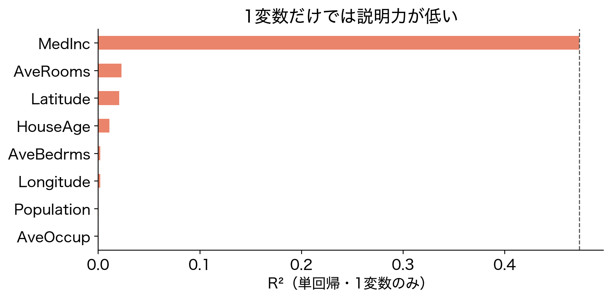
距離②：計算してみる
点1と点2の距離 \begin{aligned}&\sqrt{(2-(-3))^2+(2-1)^2}\\&=\sqrt{26}\end{aligned}
点1と点3の距離 \begin{aligned}&\sqrt{(2-1)^2+(2-(-2))^2}\\&=\sqrt{17}\end{aligned}
→ 点3のほうが近い

距離③：この考え方が大切
どちらが近いかを測る距離の考え方は、多変量解析（とくに最小二乗法）でとても大切。
次は、この距離をベクトルで書く。

ベクトル①：3点をベクトルで書く
\begin{aligned} \boldsymbol a &= [2,\,2]^\top\\ \boldsymbol b &= [-3,\,1]^\top\\ \boldsymbol c &= [1,\,-2]^\top \end{aligned}

転置：縦を横に寝かせる
\boldsymbol a=\begin{bmatrix}2\\2\end{bmatrix},\qquad \boldsymbol a^\top=\begin{bmatrix}2&2\end{bmatrix}
ベクトルは縦に並べるのが約束。^\top（転置）は、縦に並んだ数を横に寝かせる。[2,\,2]^\top は、横に書いて縦のベクトルを表す書き方。
ベクトル②：内積と \ell_2 ノルム
\begin{aligned} \text{内積}\quad \boldsymbol y^\top \boldsymbol z = \sum_{j=1}^{p} y_jz_j, \qquad \boldsymbol y^\top \boldsymbol z = \boldsymbol z^\top \boldsymbol y \\ \text{ユークリッドノルム}\quad \lVert \boldsymbol x \rVert_2 = \sqrt{\boldsymbol x^\top \boldsymbol x} \\ \text{距離}\quad \lVert \boldsymbol y - \boldsymbol z \rVert_2 = \sqrt{(\boldsymbol y - \boldsymbol z)^\top(\boldsymbol y - \boldsymbol z)} \end{aligned}
内積は掛けて足す計算。ユークリッドノルムは自分との内積の平方根（大きさ）、距離は差のユークリッドノルム。
ユークリッドノルム：ベクトルの大きさ
ユークリッドノルムは、ベクトルの大きさを1つの数で表したもの。
\begin{aligned}\lVert\boldsymbol a\rVert_2&=\sqrt{2^2+2^2}\\&=\sqrt{8}\end{aligned}

ベクトル③：距離もベクトルで
\begin{aligned} \lVert \boldsymbol a - \boldsymbol b \rVert_2 &= \sqrt{(\boldsymbol a - \boldsymbol b)^\top(\boldsymbol a - \boldsymbol b)} \\ &= \sqrt{26} \\ \lVert \boldsymbol a - \boldsymbol c \rVert_2 &= \sqrt{17} \end{aligned}
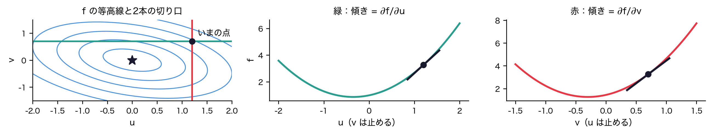
ベクトル④：何次元でも同じ式
\sum_{j=1}^{p}(y_j-z_j)^2 = \lVert \boldsymbol y - \boldsymbol z \rVert_2^2 = \boldsymbol y^\top \boldsymbol y - 2\,\boldsymbol y^\top \boldsymbol z + \boldsymbol z^\top \boldsymbol z
100次元空間では距離を目視することはできない。だが、ベクトルなら100次元でも表現できる。
行列①：生徒×教科の表
| 英語 | 数学 | 国語 | 理科 | 社会 | |
|---|---|---|---|---|---|
| 生徒1 | 86 | 57 | 71 | 82 | 91 |
| 生徒2 | 81 | 86 | 88 | 75 | 69 |
| ⋮ | |||||
| 生徒100 | 59 | 43 | 62 | 62 | 41 |
100人の生徒が5教科のテストを受けた。
行列②：データ行列X
\mathbf X = \begin{bmatrix} x_{11} & \cdots & x_{1p} \\ \vdots & & \vdots \\ x_{n1} & \cdots & x_{np} \end{bmatrix} \in \mathbb R^{n\times p}
行 ＝ 個体（生徒）、列 ＝ 変数（教科）
転置：行列の行と列を入れ替える
\begin{aligned} \mathbf A&=\begin{bmatrix}1&2\\3&4\\5&6\end{bmatrix}\\ \mathbf A^\top&=\begin{bmatrix}1&3&5\\2&4&6\end{bmatrix} \end{aligned}
n\times p の \mathbf X は、p\times n の \mathbf X^\top になる。
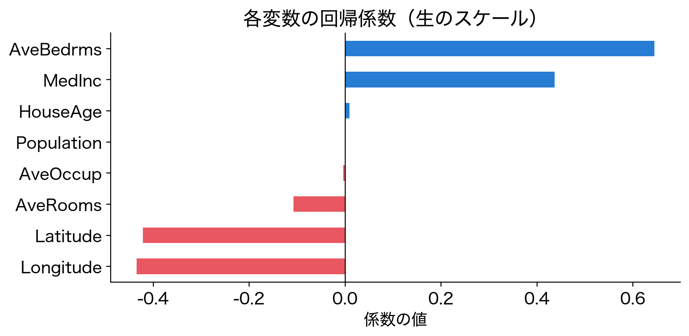
転置の規則：(AB)ᵀ＝BᵀAᵀ
(\mathbf A\mathbf B)^\top=\mathbf B^\top\mathbf A^\top,\qquad (\mathbf X\boldsymbol\beta)^\top=\boldsymbol\beta^\top\mathbf X^\top
積を転置すると、掛ける順番が逆になる。n\times1 の \mathbf X\boldsymbol\beta を寝かせた 1\times n は、1\times p の \boldsymbol\beta^\top と p\times n の \mathbf X^\top の積。
道具がそろった
- 2点の近さは距離で測る
- 点はベクトルで書け、距離は差のユークリッドノルム \lVert\boldsymbol a-\boldsymbol b\rVert_2
- 何次元でも同じ式で扱える
- 数の表は行列で書ける（データ行列）
では、実際に多変量解析の代表的な手法、線形回帰で使ってみよう。
冒頭の図に戻る

縦の線は1次元の距離。最小二乗法は、その二乗和を最小にする。実際のデータで確かめよう。
糖尿病データ①：BMIと進行度

糖尿病の患者442人：BMI（体格指数）と1年後の病気の進行度（どちらも平均を引いた値）。
糖尿病データ②：どの直線が最適？
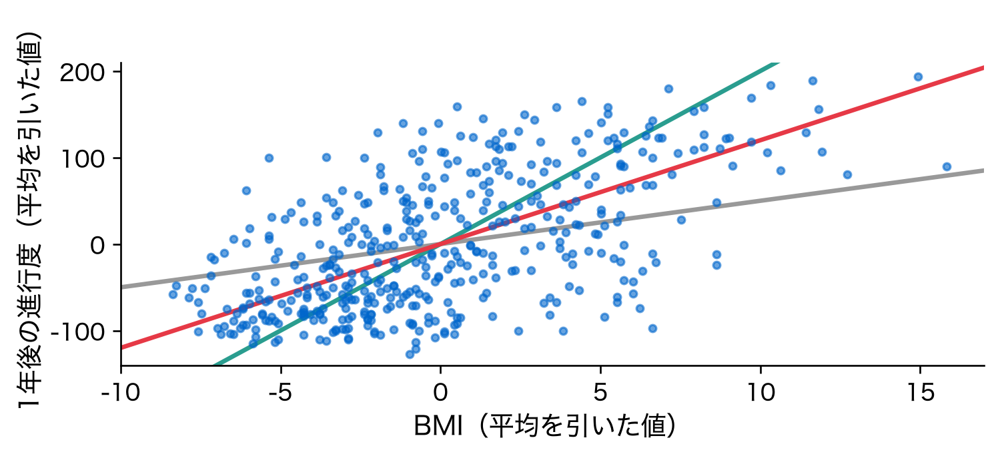
傾き \beta の違う直線は何本でも引ける。どれが最良か？
糖尿病データ③：モデル＋誤差

\underbrace{\text{データ}}_{\text{442人の進行度}} = \underbrace{\text{モデル}}_{\text{直線での予測}} + \underbrace{\text{誤差}}_{\text{赤い縦線}} 1人ぶんではなく、全員ぶんをまとめた式
糖尿病データ④：距離を最小にする

\text{誤差} = \text{データ} - \text{モデル}
データとモデルの距離（全員ぶんの赤い縦線）を最小にする ＝ 最小二乗法
糖尿病データ⑤：縦の線の二乗和

f(\beta) = \sum_{i=1}^{n} (y_i - \beta x_i)^2
冒頭の縦の線の二乗和は、データとモデルの距離の二乗だった。
目的関数をβの関数として見る
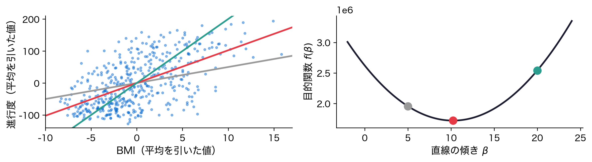
傾き \beta を動かすと、目的関数 f(\beta) は放物線を描く。左の3本の直線が、右の3つの点。
微分は接線の傾き

f の接線の傾きは、谷の左で負、右で正、谷底でちょうど0。接線の傾きが微分なので、「微分して0」とおけば最小の \beta が求まる。
スカラーで解く
\begin{aligned} f(\textcolor{red}{\beta}) &= \sum_{i=1}^{n} y_i^2 - 2\textcolor{red}{\beta}\sum_{i=1}^{n} x_iy_i + \textcolor{red}{\beta}^2\sum_{i=1}^{n} x_i^2 \\ \frac{d f(\textcolor{red}{\beta})}{d\textcolor{red}{\beta}} &= -2\sum_{i=1}^{n} x_iy_i + 2\textcolor{red}{\beta}\sum_{i=1}^{n} x_i^2 = 0 \\ \hat\beta &= \frac{\sum_{i=1}^{n} x_i y_i}{\sum_{i=1}^{n} x_i^2} \end{aligned}
二乗を展開すると、\beta の2次関数。項ごとに微分して0とおき、\beta について解く。使うのは1変数の微分だけ。赤い直線の傾きがこの \hat\beta。
係数が2つなら？

切片を入れると y_i=\beta_0+\beta_1x_i+e_i。目的関数 f(\beta_0,\beta_1) は2変数の谷になる。谷底をどう探す？
偏微分：1つだけ動かす
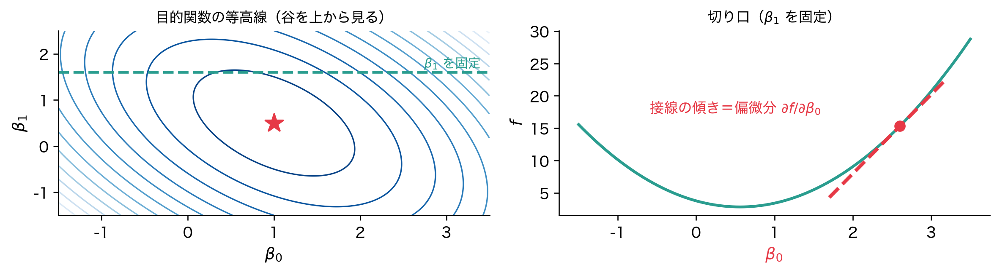
\beta_1 を固定して \textcolor{red}{\beta_0} だけを動かすと、切り口は1変数の放物線。その接線の傾きが偏微分 \partial f/\partial\textcolor{red}{\beta_0}。
1つずつ偏微分する
\begin{aligned} \frac{\partial f}{\partial\textcolor{red}{\beta_0}} &= -2\sum_{i=1}^{n}\bigl(y_i-\textcolor{red}{\beta_0}-\beta_1x_i\bigr) = 0, \\ \frac{\partial f}{\partial\textcolor{blue}{\beta_1}} &= -2\sum_{i=1}^{n}x_i\bigl(y_i-\beta_0-\textcolor{blue}{\beta_1}x_i\bigr) = 0 \end{aligned}
色の係数だけを動かし、残りは固定して微分する。谷底では、どの向きの傾きも0。係数が2つなら、2本の連立方程式を解けばよい。
係数がp個なら？
y_i = \beta_1x_{i1} + \cdots + \beta_px_{ip} + e_i
\frac{\partial f}{\partial\beta_k} = -2\sum_{i=1}^{n}x_{ik}\Bigl(y_i-\sum_{j=1}^{p}\beta_jx_{ij}\Bigr) = 0
k=1,\dots,p の p 本の連立方程式。和の記号が二重になり、1本ずつ書き下すのも解くのも大変。
まとめて書く道具
- 数の並び（\beta_1,\dots,\beta_p）→ ベクトル \boldsymbol\beta（済み）
- 掛けて足す計算（\sum_j\beta_jx_{ij}）→ 内積（済み）
- 数の表（x_{ij}）→ 行列 \mathbf X（済み）
ベクトルと行列を使えば、p 本の式が1本で書ける。
四角形で見る①：yはn×1
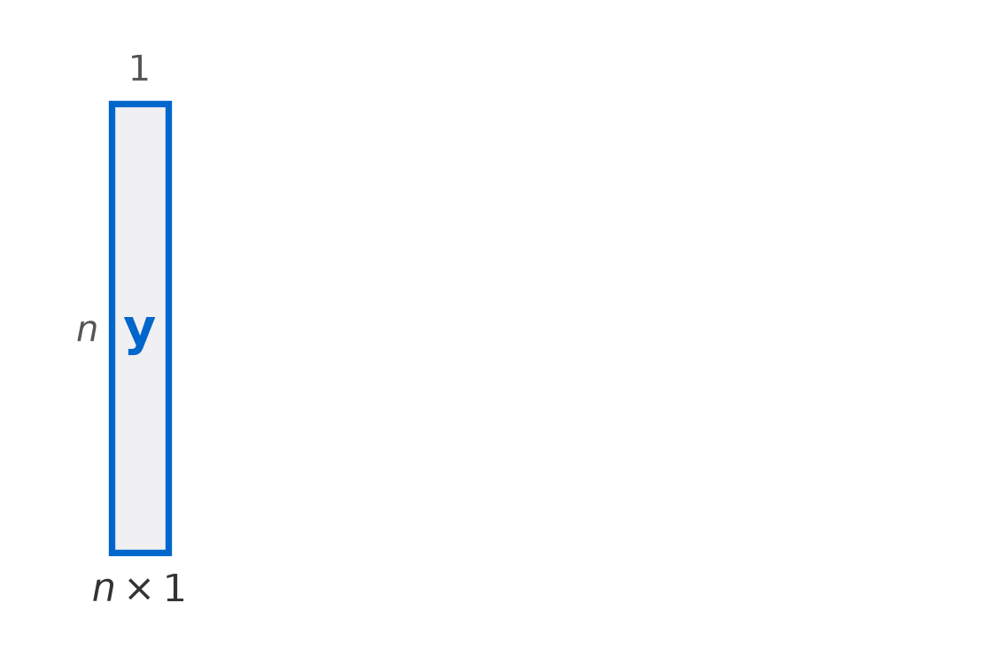
n 人の進行度を縦に並べた \boldsymbol y は、n 行1列の細長い箱。
四角形で見る②：Xβ
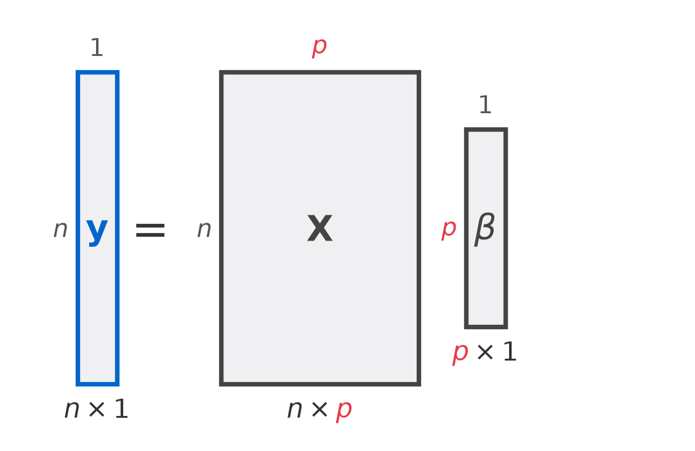
赤の2つの p（\mathbf X の列の数と \boldsymbol\beta の行の数）がそろうので掛けられる。積は n 行1列で、\boldsymbol y と同じ形。
四角形で見る③：誤差を足す
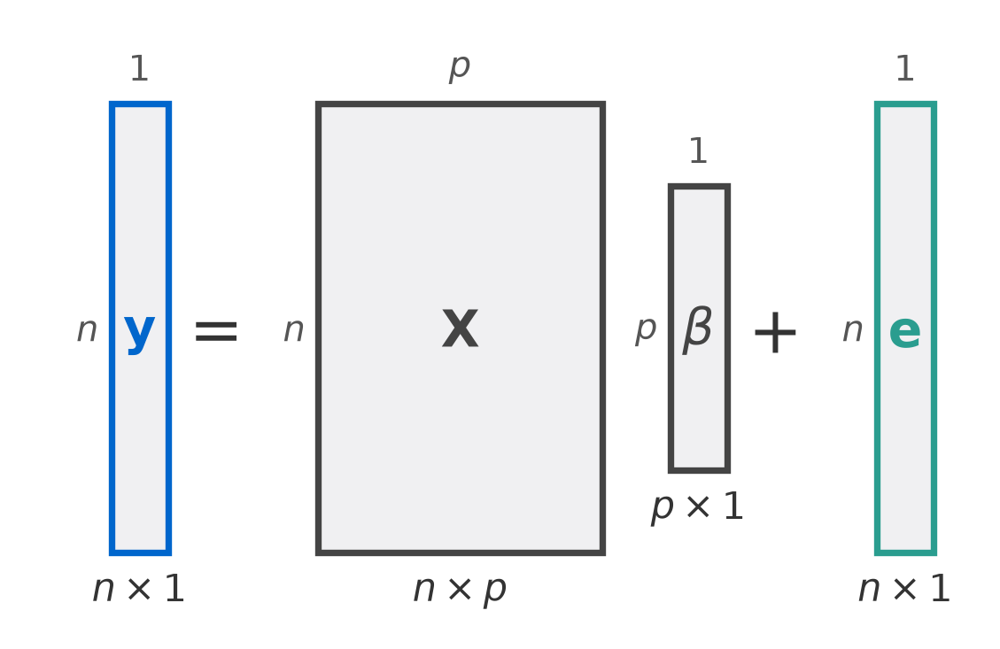
\mathbf X\boldsymbol\beta だけでは \boldsymbol y に届かない。埋めきれないずれ \boldsymbol e を足すと、データ＝モデル＋誤差。
四角形で見る④：1行を取り出す
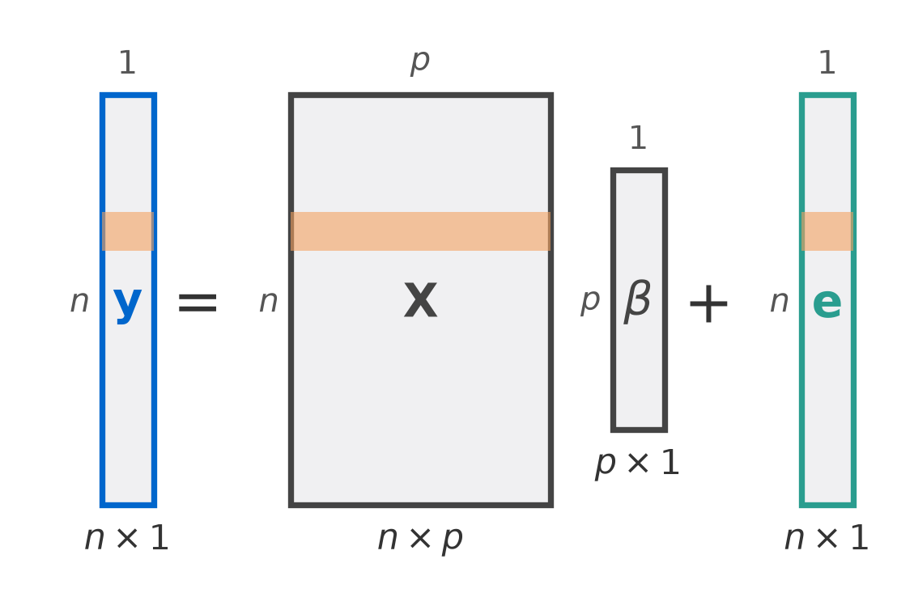
帯の第 i 行は y_i=\beta_1x_{i1}+\cdots+\beta_px_{ip}+e_i。「係数がp個なら？」の1人ぶんの式。
目的関数①：説明変数がp個になる
\sum_{i=1}^{n}\Bigl(y_i - \sum_{j=1}^{p}\beta_j x_{ij}\Bigr)^2 = \lVert \boldsymbol y - \mathbf X\boldsymbol\beta \rVert_2^2
説明変数が p 個になっても、行列でまとめれば同じ形。これが重回帰分析の目的関数。
目的関数②：推定するのはβ
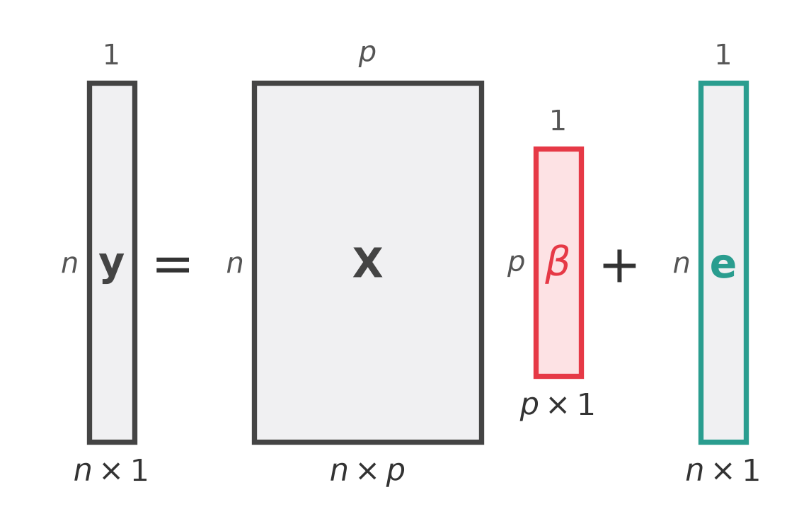
\boldsymbol y と \mathbf X はデータとして与えられている。推定するのは p 行1列の \boldsymbol\beta だけ。
まとめてベクトルで微分する
\frac{\partial f}{\partial\boldsymbol\beta} = \begin{bmatrix} \partial f/\partial\beta_1 \\ \vdots \\ \partial f/\partial\beta_p \end{bmatrix} = -2\,\mathbf X^\top(\boldsymbol y - \mathbf X\boldsymbol\beta)
「係数が p 個なら？」の p 本の偏微分を縦に並べたベクトルが勾配。p 本の式が1本で書ける。導くための道具が次の2つ。
導出の道具①：ベクトルで微分する
\frac{\partial\, \mathbf A\boldsymbol x}{\partial \boldsymbol x} = \mathbf A^\top, \qquad \frac{\partial\, \boldsymbol x^\top \mathbf B}{\partial \boldsymbol x} = \mathbf B
導出の道具②：逆行列
\mathbf A\mathbf A^{-1} = \mathbf A^{-1}\mathbf A = \mathbf I_p
逆行列を持つ正方行列を正則という（持たない行列もある）。
導出①：内積にして展開する
\begin{aligned} \lVert \boldsymbol y - \mathbf X\textcolor{red}{\boldsymbol\beta} \rVert_2^2 &= (\boldsymbol y - \mathbf X\textcolor{red}{\boldsymbol\beta})^\top(\boldsymbol y - \mathbf X\textcolor{red}{\boldsymbol\beta}) \\ &= \boldsymbol y^\top \boldsymbol y - \boldsymbol y^\top\mathbf X\textcolor{red}{\boldsymbol\beta} - (\mathbf X\textcolor{red}{\boldsymbol\beta})^\top\boldsymbol y + (\mathbf X\textcolor{red}{\boldsymbol\beta})^\top\mathbf X\textcolor{red}{\boldsymbol\beta} \\ &= \boldsymbol y^\top \boldsymbol y - 2\,\textcolor{red}{\boldsymbol\beta}^\top\mathbf X^\top \boldsymbol y + \textcolor{red}{\boldsymbol\beta}^\top\mathbf X^\top\mathbf X\textcolor{red}{\boldsymbol\beta} \end{aligned}
ユークリッドノルムの二乗は、自分との内積。括弧を外し、(\mathbf X\textcolor{red}{\boldsymbol\beta})^\top=\textcolor{red}{\boldsymbol\beta}^\top\mathbf X^\top と内積の可換性で真ん中の2項をまとめる。
導出②：1つ目の項を微分する
\frac{\partial\,\textcolor{red}{\boldsymbol\beta}^\top(\mathbf X^\top\boldsymbol y)}{\partial \textcolor{red}{\boldsymbol\beta}} = \mathbf X^\top\boldsymbol y
導出の道具①の右の式 \partial\,\boldsymbol x^\top\mathbf B/\partial\boldsymbol x=\mathbf B で、\boldsymbol x を \textcolor{red}{\boldsymbol\beta}、\mathbf B を \mathbf X^\top\boldsymbol y とおいた。
導出③：2つ目の項を微分する
\begin{aligned} \frac{\partial\,\textcolor{red}{\boldsymbol\beta}^\top\mathbf X^\top\mathbf X \textcolor{red}{\boldsymbol\beta}}{\partial \textcolor{red}{\boldsymbol\beta}} &= \frac{\partial\,\textcolor{red}{\boldsymbol\beta}^\top(\mathbf X^\top\mathbf X\boldsymbol\beta)}{\partial \textcolor{red}{\boldsymbol\beta}} + \frac{\partial\,(\boldsymbol\beta^\top\mathbf X^\top\mathbf X) \textcolor{red}{\boldsymbol\beta}}{\partial \textcolor{red}{\boldsymbol\beta}} \\ &= \mathbf X^\top\mathbf X\boldsymbol\beta + (\boldsymbol\beta^\top\mathbf X^\top\mathbf X)^\top \\ &= 2\,\mathbf X^\top\mathbf X \textcolor{red}{\boldsymbol\beta} \end{aligned}
\boldsymbol\beta が2つあるので、片方を定数とみて（黒）1つずつ微分し、足す。1つ目は道具①の右の式（\mathbf B=\mathbf X^\top\mathbf X\boldsymbol\beta）、2つ目は左の式（\mathbf A=\boldsymbol\beta^\top\mathbf X^\top\mathbf X）。転置の規則から (\mathbf X^\top\mathbf X)^\top=\mathbf X^\top\mathbf X なので、2つの項は等しい。
導出④：勾配を0とおく
\frac{\partial f(\textcolor{red}{\boldsymbol\beta}\mid\boldsymbol y,\mathbf X)}{\partial\textcolor{red}{\boldsymbol\beta}} = 2\bigl(-\mathbf X^\top\boldsymbol y + \mathbf X^\top\mathbf X\textcolor{red}{\boldsymbol\beta}\bigr) = \mathbf 0_p
正規方程式
\mathbf X^\top\mathbf X\,\hat{\boldsymbol\beta} = \mathbf X^\top\boldsymbol y \qquad\Longrightarrow\qquad \hat{\boldsymbol\beta} = (\mathbf X^\top\mathbf X)^{-1}\mathbf X^\top\boldsymbol y
アルゴリズム：計算手順
- 説明変数の列の先頭に切片の列（すべて1）を足して \mathbf X とする
- \mathbf X^\top\mathbf X と \mathbf X^\top\boldsymbol y を作る
- 正規方程式 \mathbf X^\top\mathbf X\,\boldsymbol\beta = \mathbf X^\top\boldsymbol y を解いて \hat{\boldsymbol\beta} を求める
- \hat{\boldsymbol y} = \mathbf X\hat{\boldsymbol\beta} と残差 \boldsymbol e = \boldsymbol y - \hat{\boldsymbol y} を出す
k-means①：代表点で近似する
線形回帰とは別のモデルでも確かめる。点を3つの群に分け、群ごとに代表点（★）を1つ置く。各点をその群の★で近似する。これがk-meansのモデル。
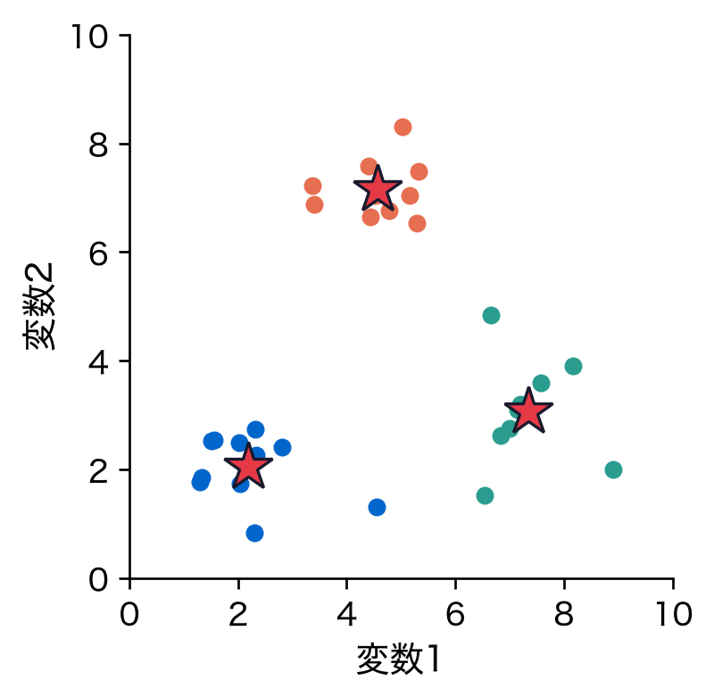
k-means②：誤差は代表点までの線
各点から自分の群の★へ引いた線が誤差。その二乗和が最小になるように、群分けと★の位置を決める。
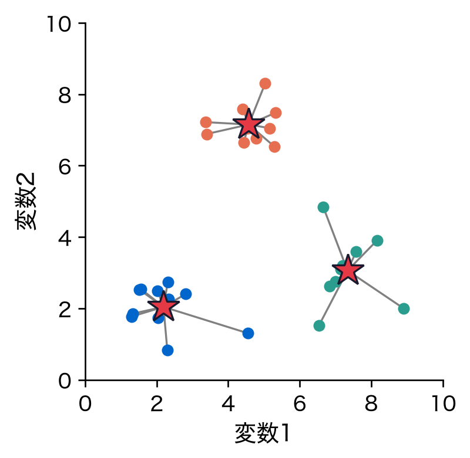
同じ推定法、違うモデル
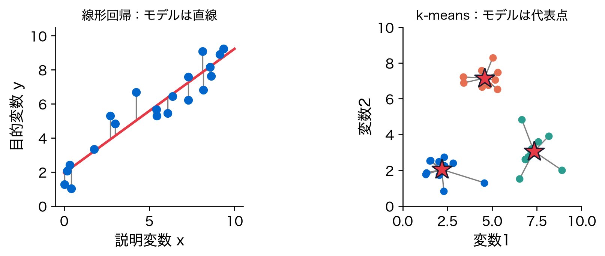
\lVert \boldsymbol y-\mathbf X\boldsymbol\beta \rVert_2^2 \qquad\text{と}\qquad \sum_{i=1}^{n}\bigl\lVert \tilde{\boldsymbol x}_i-\boldsymbol c_{q(i)}\bigr\rVert_2^2
モデルは違うが、どちらも誤差の二乗和を最小にする。推定法は同じ最小二乗法。
モデルと推定法を分ける
| モデル ＼ 推定法 | 最小二乗法 | 最尤法 |
|---|---|---|
| 線形回帰 | 第1回 | 第6回 |
| 線形判別分析（LDA） | 第5回 | 第6回 |
| ロジスティック回帰 | — | 第6回 |
| 主成分分析（PCA） | 第9・10回 | — |
| k-means | 第11回 | — |
| 混合正規分布（GMM） | — | 第12回 |
| 対応分析 | 第14回（重み付き） | — |
同じモデルでも推定法は選べる。同じ推定法が多くのモデルに使える。
並ぶもう一つの推定法：最尤法
- 最小二乗法：データとモデルの距離を最小にする
- 最尤法：そのデータが出てくる確率を最大にする
誤差が正規分布に従う線形回帰では、2つの答えは一致する。
位置づけ：全15回の地図
| 回 | 中身 | 地図の上で |
|---|---|---|
| 1〜4 | 最小二乗法・汎化・限界・正則化 | 線形回帰 × 最小二乗 → 罰則付き |
| 5〜7 | 分類・決定理論 | 最小二乗 → 最尤（LDA・ロジスティック） |
| 8 | 教師あり／教師なし | yを近似か、Xを近似か |
| 9〜10 | 主成分分析 | PCA × 最小二乗：交互最小二乗法 → SVD（特異値分解）1回 |
| 11〜13 | k-means・GMM・モデル選択 | 最小二乗 → 最尤 |
| 14〜15 | 対応分析・残差 | 重み付き最小二乗・独立モデル × 最尤 |
第II部 実データ解析
データ：糖尿病データ
| 変数 | 意味 | |
|---|---|---|
| 0 | age | 年齢 |
| 1 | sex | 性別 |
| 2 | bmi | BMI（体格指数） |
| 3 | bp | 平均血圧 |
| 4 | s1 | 総コレステロール |
| 5 | s2 | LDL コレステロール |
| 6 | s3 | HDL コレステロール |
| 7 | s4 | 総コレステロール ÷ HDL |
| 8 | s5 | 中性脂肪（対数） |
| 9 | s6 | 血糖値 |
10の説明変数から、1年後の病気の進行度を当てたい。
データを読む準備①：平均・分散
\bar{x}=\frac{1}{n}\sum_{i=1}^{n}x_i, \qquad s^2=\frac{1}{n-1}\sum_{i=1}^{n}(x_i-\bar{x})^2, \qquad s=\sqrt{s^2}
- 平均 \bar{x}：分布の真ん中の位置
- 分散 s^2：平均からのずれの二乗を足して n-1 で割ったもの＝ばらつきの大きさ
- 標準偏差 s：分散の平方根。元の単位でばらつきを表す
進行度なら平均 152、標準偏差 77。
データを読む準備②：共分散・相関
s_{xy}=\frac{1}{n-1}\sum_{i=1}^{n}(x_i-\bar{x})(y_i-\bar{y}), \qquad r_{xy}=\frac{s_{xy}}{s_x\,s_y}
- 共分散 s_{xy}：2変数が一緒に動く度合い（同じ向きなら正、逆なら負）
- 相関係数 r_{xy}：共分散を標準偏差で割って -1〜1 にそろえたもの。直線的な関係の強さ
- 相関行列：全変数の組の相関係数を並べた表（対角は必ず1）
BMIと進行度の相関係数は 0.59。
目的変数の分布
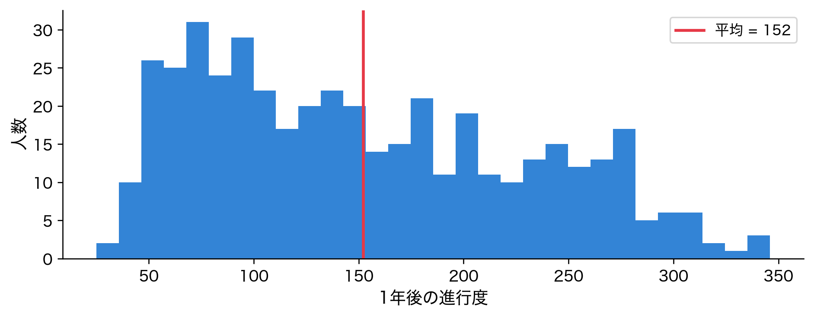
25〜346の範囲で、やや右に裾を引く。予測対象の素性を最初に知るのが鉄則。
単回帰①：1変数ずつ見る
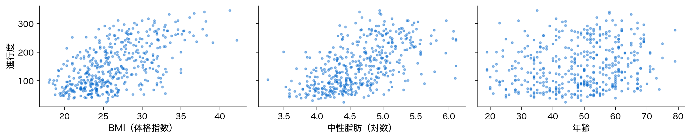
BMIと中性脂肪は右上がり。だが年齢は雲のように散らばり、年齢だけでは進行度を説明できない。
単回帰②：1変数ずつ当てる
10の変数それぞれで単回帰（説明変数1つの回帰）を当てはめ、R^2（説明できた割合、0〜1）を並べた。
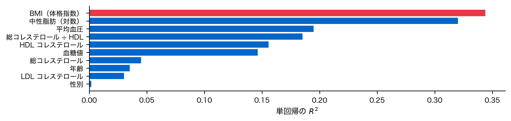
R^2 が最も大きいBMIでも R^2\approx 0.34。どれか1つでは足りない。
手続き：何をどう計算したか
- データ行列 \mathbf X：442人 × 10変数（単位はそのまま）の先頭に、切片の列（すべて1）を足す
- 正規方程式 \mathbf X^\top\mathbf X\hat{\boldsymbol\beta}=\mathbf X^\top\boldsymbol y を解く
- 予測値 \hat{\boldsymbol y}=\mathbf X\hat{\boldsymbol\beta} と R^2 を求める
10変数すべてを使うと R^2\approx 0.52。単回帰の最良より明確に向上した。
検証：正規方程式とライブラリ
| 正規方程式 | scikit-learn | |
|---|---|---|
| 切片 | -334.5671 | -334.5671 |
| age | -0.0364 | -0.0364 |
| sex | -22.8596 | -22.8596 |
| bmi | 5.6030 | 5.6030 |
| bp | 1.1168 | 1.1168 |
| s1 | -1.0900 | -1.0900 |
| s2 | 0.7465 | 0.7465 |
| s3 | 0.3720 | 0.3720 |
| s4 | 6.5338 | 6.5338 |
| s5 | 68.4831 | 68.4831 |
| s6 | 0.2801 | 0.2801 |
2つの計算の差は最大でも 3\times 10^{-11} で、同じ答えになる。
デモ①：係数を読む
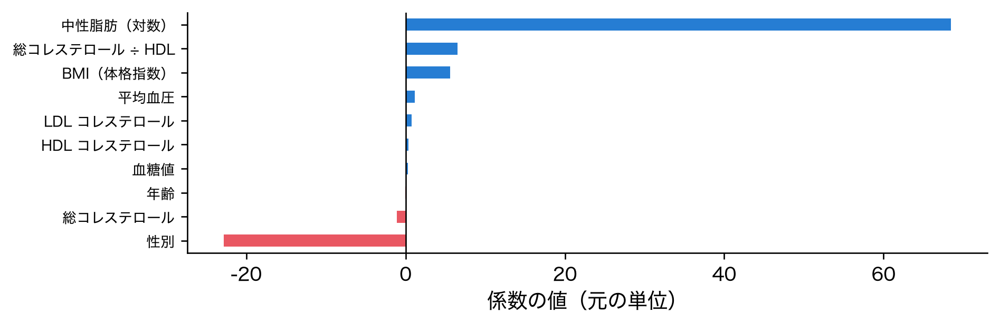
青は進行度を上げる向き、赤は下げる向き。単位が列ごとに違うので、棒の長さは比べられない。
解釈：R²の意味
R^2 = 1 - \frac{\sum_i (y_i-\hat{y}_i)^2}{\sum_i (y_i-\bar{y})^2}
1に近いほど、平均で予測するより誤差を大きく減らせている。
落とし穴：相関≠因果
- BMIと進行度に相関 → 「BMIを下げれば進行が止まる」と言いたくなる
- だが第三の要因（例：生活習慣）が両方を動かしているだけかもしれない
- 回帰係数は関連の強さを測るが、因果の証明ではない
落とし穴：外挿の危険
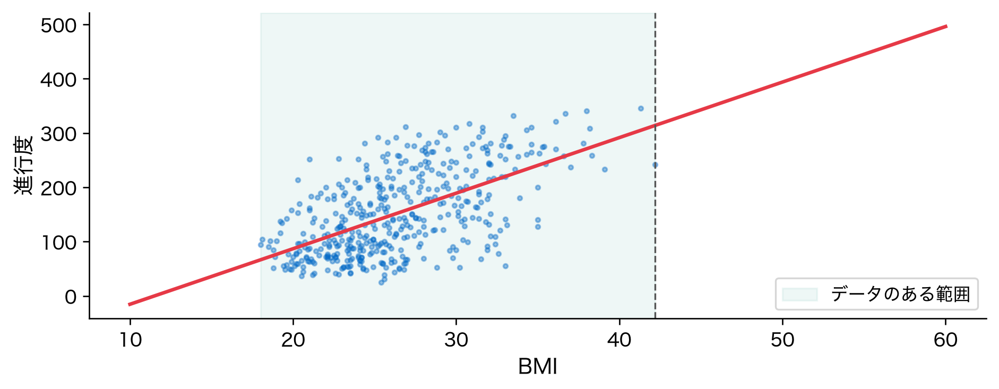
学習した範囲の外（外挿）では、直線が現実から外れても確かめようがない。
落とし穴：係数の符号の罠
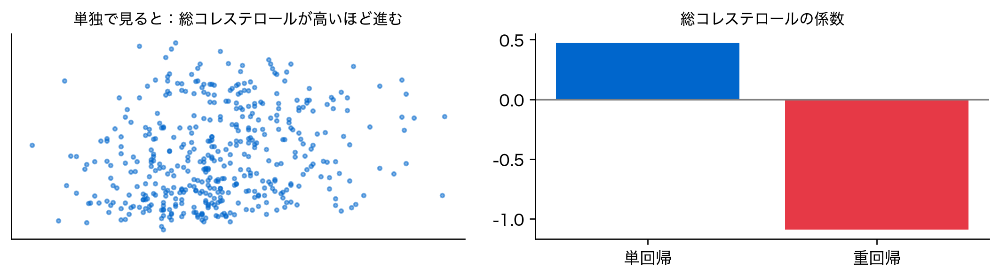
総コレステロールの係数は単回帰で +0.47、重回帰で -1.09。符号だけで断定しない。
締め
発展：直線では足りないとき
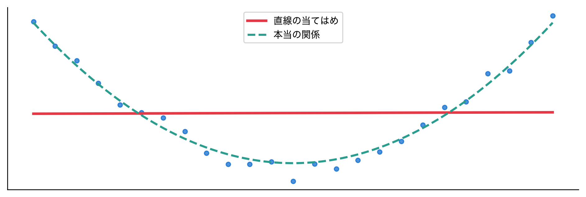
モデルを曲線に替えても、推定法は同じ最小二乗法でよい。x^2 や x_1x_2 を \mathbf X の列に足すだけ。
まとめ
- 最小二乗法は推定法：\lVert \text{データ} - \text{モデル} \rVert_2^2 を最小にする。線形回帰はその一例
- 線形回帰の解：正規方程式 \mathbf X^\top\mathbf X\hat{\boldsymbol\beta} = \mathbf X^\top\boldsymbol y を1回解けば求まる
- 線形回帰に限らない：k-meansも誤差の二乗和を最小にする。モデルは違っても推定法は同じ最小二乗法
次回予告：手元のR²は楽観的
- R^2\approx 0.52 は、係数を決めたのと同じ442人で測った値
- 列を増やすと、手元の R^2 は下がることがない
問い：訓練に使った行で測った当てはまりは、見ていない行でも成り立つか？